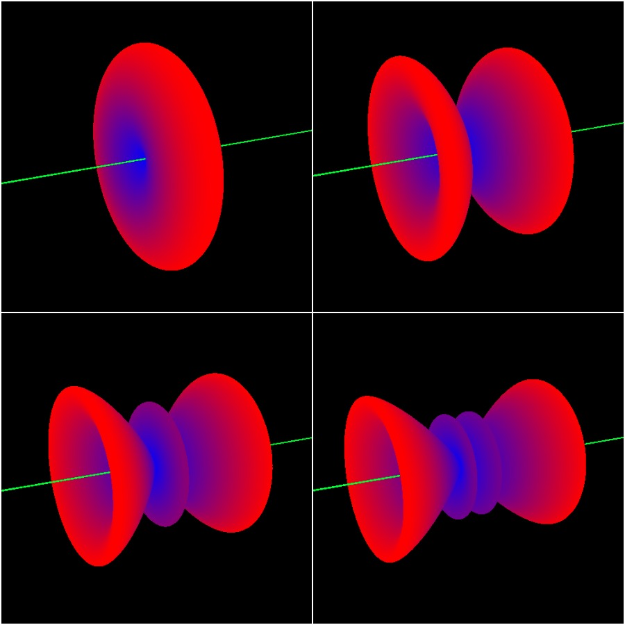

A dipole is a type of simple omnidirectional antenna with two same sized elements on either side of the feed point. It is commonly used in amateur radio and is normally half a wavelength long which makes it have a gain of 2.15dBi. The radiation pattern of a dipole is a toroidal shape with the maximum radiation perpendicular to the axis of the dipole and nulls along the axis of the dipole.
I simulated the power radiation pattern of a dipole antenna using C++ and OpenGL. The gain in one directional is calculated and then used as the radius of a point in 3D space from the center of the dipole. The bigger the gain in a direction, the further away the point is from the center of the dipole and you can see where the lobes and nulls are.
The dipole is depndent on the wavelength of the signal being radiated (lamda/λ) and the length of the dipole (L). This shapes the radiation pattern which changes the dipole's gain in different directions. The image above shows the simulated radiation pattern of a dipole going from L being 0.5 wavelenths (traditional dipole), to then L being 1 wavelengths, to then 1.5 wavelengths and finally 2 wavelengths long (top-left to bottom-right).
The math behind the simulation is as follows (the result is the gain at angle theta): $$ G(\theta) = \left( \frac{\cos\left(\frac{\pi L}{\lambda} \cos(\theta)\right) - \cos\left(\frac{\pi L}{\lambda}\right)}{\sin(\theta)} \right)^2 $$
The files for this simulation can be found in my github repository in the Simulation folder.